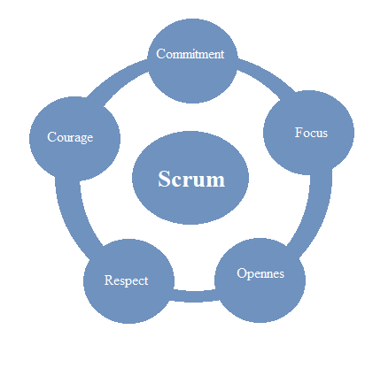
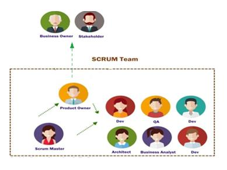
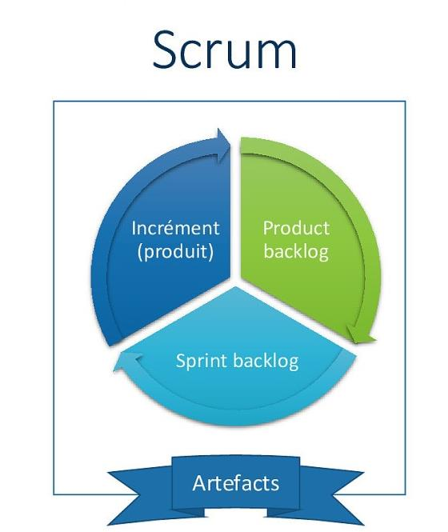
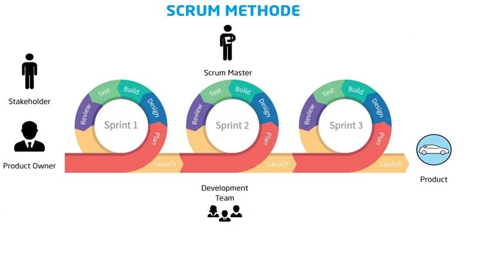
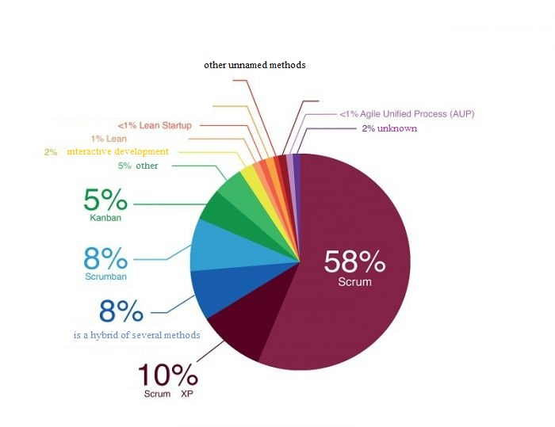

What is Scrum?
"Scrum" is a framework, an author's agile development method with a non-standard distribution of roles in a
team and a unique organization of iterations. Scrum, like other agile-project management methods, promotes a
team approach, short iterations, and continuous improvement in the process. These principles are implemented
through a set of specific roles, rules, processes, and tools that help teams produce products in half the
time.
What is this Scrum?
The peculiarity of Scrum lies in the team approach and non-standard distribution of responsibilities within
the team. The process involves not only company employees, but also business customers, who should be
included in the process of creating a product more often than with other approaches, and do this mainly in
personal communication, and not through documents

The Scrum framework is based on the 5 (five) core values that guide the work, behavior and action in Scrum.
Roles in Scrum

Scrum is a role-playing framework. The basic unit is a small group of people, usually no more than ten.
The team consists of: scrum master, product owner, developers. The Scrum team is quite mobile and
self-organized and performs all product activities: cooperation with stakeholders, verification,
maintenance, operation, development, and everything that the business requires. The entire Scrum team is
responsible for creating a valuable, useful product and is open to change.
-
Developers – this is a group of people whose skills depend on the subject area of the work
performed and may be different. They are responsible for the creation of the Spint Backlog, the pursuit
of product quality, daily adaptation to achieve a common goal, mutual accountability to each other as
professionals.
-
Product Owner – is responsible for maximizing the value of the product. Usually appointed by the
business side. He can do his own work, or delegate its implementation to others. However, he alone is
responsible for it. Responsible for the development and understanding by developers of the final goal of
the project (Product goal), the creation of a product backlog, the priority of tasks in the product
backlog, the availability and understanding of the product backlog by all team members.
-
Scrum master – kind of scrum-moderator. Responsible for implementing scrum in accordance with the
scrum guide. Works directly with both the developer organization and the business. Helps them understand
the theory and practices of Scrum. Responsible for the effectiveness of the Scrum team, helping the team
to improve their working methods and improve.
Scrum artefacts

The main indicators of Scrum quality are artefacts - the so-called control points, which provide
transparent information on which the workflow is evaluated.
-
The Product Backlog is an organized and constantly updated priority list of what is needed to
improve the product. This is the only source of work done by the Scrum Team. Product Backlog's
commitment is Product Goal. The Product Goal is the long-term expected outcome of the Scrum Team. They
must achieve one goal (or give it up) before moving on to the next.
-
The Sprint Backlog is a visual and real-time picture of the work that Developers plan to do
during the Sprint to achieve the Sprint Goal. Sprint Backlog's commitment is Product Goal. Sprint Goal
also provides coherence and focus, encouraging the Scrum Team to work together rather than on separate
initiatives.
-
Increment – this is a concrete step towards achieving the Product Goal. Each Increment is in
addition to all the previous ones. The commitment of increment is to determine readiness. The definition
of readiness is a description of the state of an increment in which it meets the quality requirements.
If multiple Scrum Teams are working on a common product, they must jointly define and adhere to the same
definition of readiness.
Organization of work according to Scrum

The organization of any Scrum project begins with the distribution of roles. The Product Owner is hired,
usually on the customer's side. A Scrum master is invited or appointed to oversee scrum processes for both
parties. A multifunctional professional development team is hired, which is ready to solve a different range
of tasks.
Advantages of Scrum
-
Acceleration of the work process by breaking the project into small stages, each of which clearly defines
the goal and ways to achieve it;
- Quick achievement of the goal, due to the simultaneous work on different tasks;
-
Ease of making adjustments and reducing the time to find errors by breaking large tasks into small ones;
- The level of responsibility of team members increases;
- Transparency, through open exchange of information;
- Maintaining a high level of motivation, due to the daily visibility of achievements.
Disadvantages of Scrum
- Success is deeply dependent on the qualifications of the scrum master and the team as a whole;
- It is not always possible to adapt the method to a specific project;
- Requires regular communication with the customer, which is not always realistic;;
- More suitable for small and medium projects;
- Human factor.
Scrum stats

Today, this approach is considered one of the most popular among developers using an agile methodology.
According to a public chart of approaches used in IT-development for 2022.
Thank you for your attention!